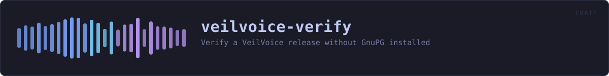

veilvoice-verify
Verify a VeilVoice release without GnuPG installed
reference · the same page on GitHub
The portable verifier: check a VeilVoice release without GnuPG installed.
What this is for
Verifying a download by hand needs GnuPG and a SHA-256 tool. That is four commands and two dependencies, and on Windows it is usually neither. This is one binary that does the same checks with nothing else installed: the signing key and its fingerprint are compiled into it.
The one thing it cannot embed
It cannot carry the expected hash of the file it is checking. A file cannot contain its own digest -- writing the digest in changes the file, which changes the digest. So the hash has to come from outside, and there are exactly two places it can come from. They prove different things, and this tool is careful never to blur them:
From the published SHA256SUMS -- whose signature this tool checks against the embedded key. A match proves the download is intact: it is byte-for-byte the file that was published, not a corrupted or substituted one. It says nothing about whether that file corresponds to the source, because whoever published it produced both the file and the list.
Typed in by hand, from a hash somebody else produced by building the same tagged source themselves. A match proves something strictly stronger: that the published binary is what that source compiles to, on a machine that is not the publisher's. That is reproducibility, and it is the only check that does not ultimately rest on trusting whoever signed the release.
Most people want the first. The second is what makes the first worth anything, and it needs somebody other than the author to have done a build. docs/REPRODUCIBLE_BUILDS.md says how.
What it does not do
It does not download anything -- this project has no network code and this binary is not the exception. Fetch the files however you like; this reads them from disk. It does not install anything, and it writes nothing.
In plain words
This is the small program you can check a download with before trusting anything else here.
It is deliberately tiny and it is on its own: no window, no other pieces, and it does not need any other software installed -- not even the usual signature program. That matters because it is the first thing you run, and the point of it is to be small enough to be worth reading.
Double-click it and it looks for a downloaded release nearby and checks it. Give it arguments and it does exactly what you asked.
HOW THE CRATE FITS TOGETHER
Every arrow is a crate:: or super:: path one module actually uses, read out of the source rather than drawn by hand.
The same graph as Mermaid source
%%{init: {"theme":"base","themeVariables":{"background":"#1a1b26","primaryColor":"#1f2335","primaryTextColor":"#c0caf5","primaryBorderColor":"#7aa2f7","secondaryColor":"#16161e","tertiaryColor":"#16161e","lineColor":"#737aa2","textColor":"#c0caf5","mainBkg":"#1f2335","nodeBorder":"#7aa2f7","clusterBkg":"#16161e","clusterBorder":"#2f3549","fontFamily":"ui-monospace, SFMono-Regular, Consolas, monospace","fontSize":"14px"}}}%%
flowchart TD
n_main(["main.rs<br/>1396 lines"])
n_builder["builder.rs<br/>1148 lines"]
n_deps["deps.rs<br/>650 lines"]
n_discover["discover.rs<br/>353 lines"]
n_fetch["fetch.rs<br/>329 lines"]
n_report["report.rs<br/>385 lines"]
n_tests["tests.rs<br/>357 lines"]
n_builder --> n_deps
n_builder --> n_report
n_main --> n_report
click n_main href "https://github.com/tilas01/veilvoice/blob/main/crates/veilvoice-verify/src/main.rs" "open the source"
click n_builder href "https://github.com/tilas01/veilvoice/blob/main/crates/veilvoice-verify/src/builder.rs" "open the source"
click n_deps href "https://github.com/tilas01/veilvoice/blob/main/crates/veilvoice-verify/src/deps.rs" "open the source"
click n_discover href "https://github.com/tilas01/veilvoice/blob/main/crates/veilvoice-verify/src/discover.rs" "open the source"
click n_fetch href "https://github.com/tilas01/veilvoice/blob/main/crates/veilvoice-verify/src/fetch.rs" "open the source"
click n_report href "https://github.com/tilas01/veilvoice/blob/main/crates/veilvoice-verify/src/report.rs" "open the source"
click n_tests href "https://github.com/tilas01/veilvoice/blob/main/crates/veilvoice-verify/src/tests.rs" "open the source"This site loads no third-party script, so it cannot run Mermaid; the diagram above is the same nodes and edges drawn by the generator instead. GitHub renders the source below directly.
THE FILES
| File | Lines | What it is |
|---|---|---|
builder.rs | 1148 | Build VeilVoice here, and compare what came out against what was published. |
deps.rs | 650 | What this machine needs before it can build VeilVoice, and who ships it. |
discover.rs | 353 | Finding a release to check, without being told where it is. |
fetch.rs | 329 | Download a release, without putting an HTTP client in the dependency graph. |
main.rs | 1396 | The portable verifier: check a VeilVoice release without GnuPG installed. |
report.rs | 385 | How much this program says, and what it returns when it says nothing. |
tests.rs | 357 | The verifier's own tests. |